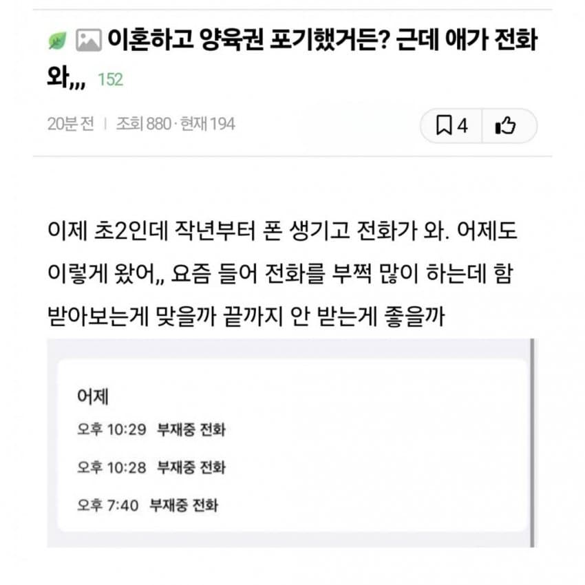
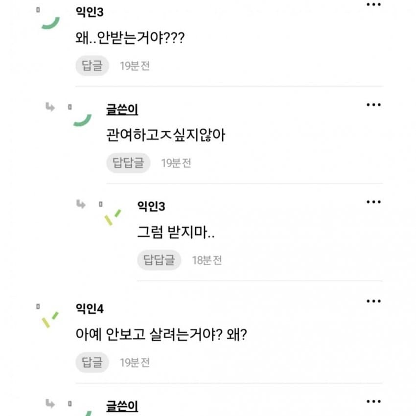
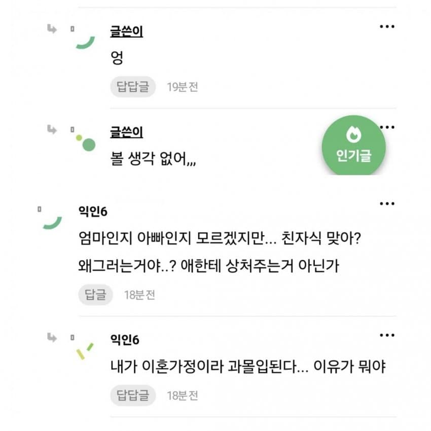
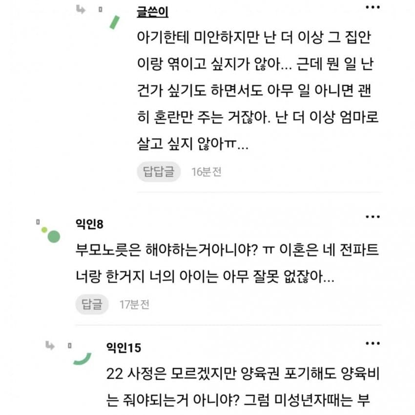
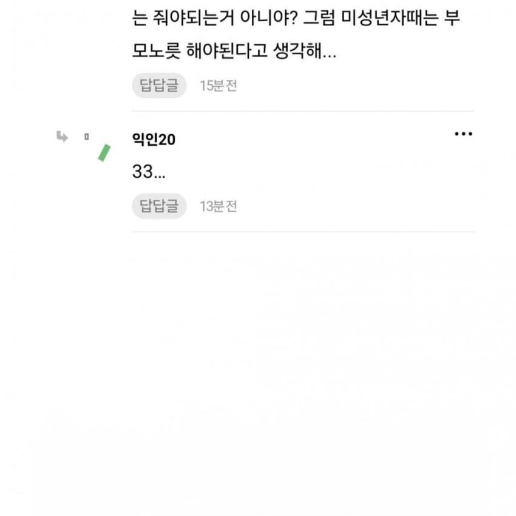
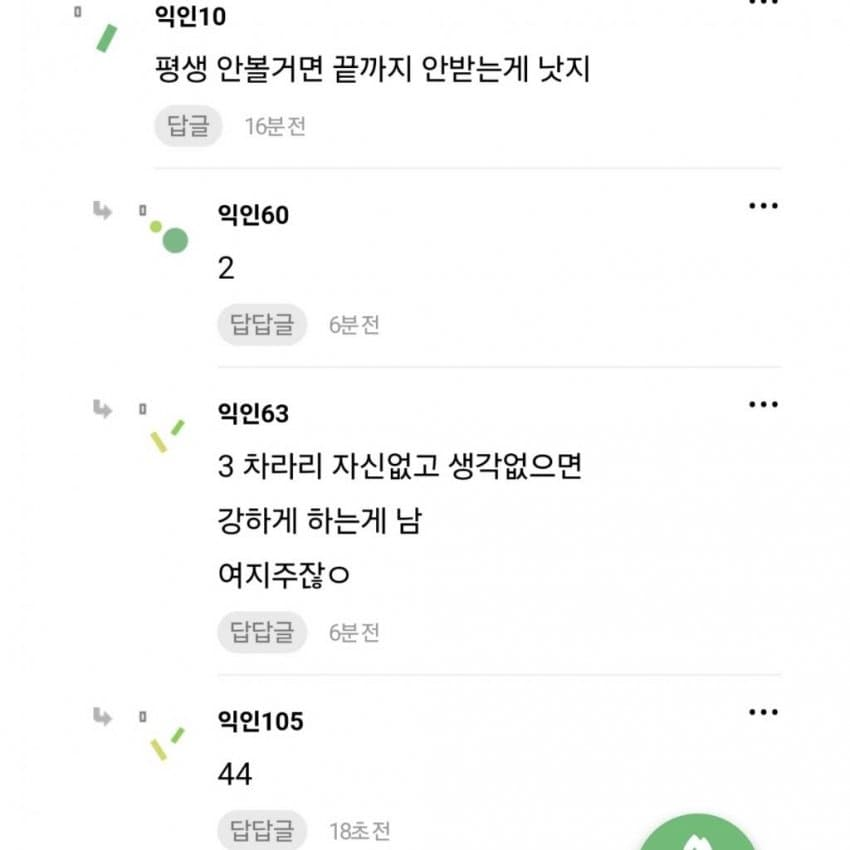
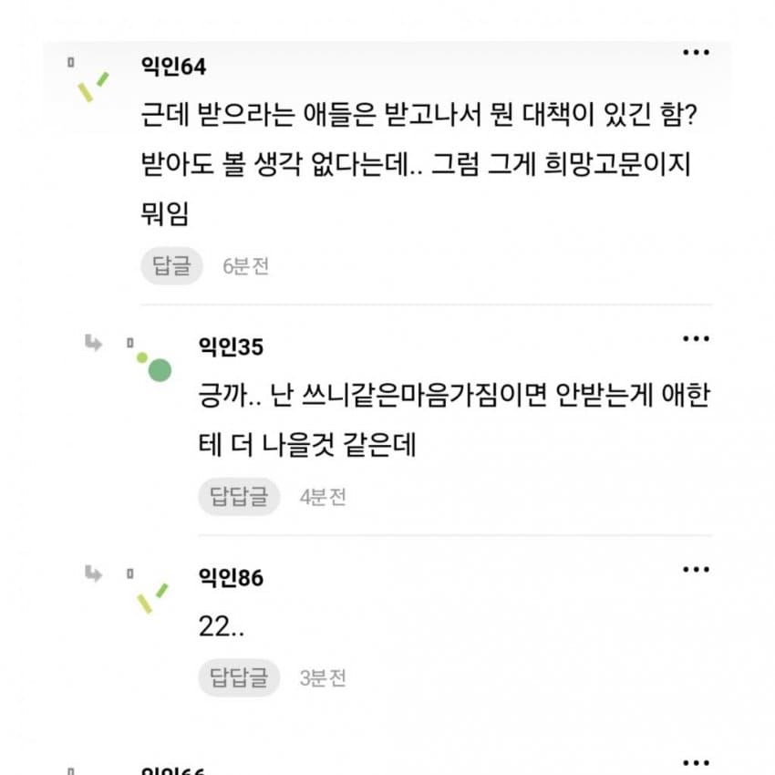
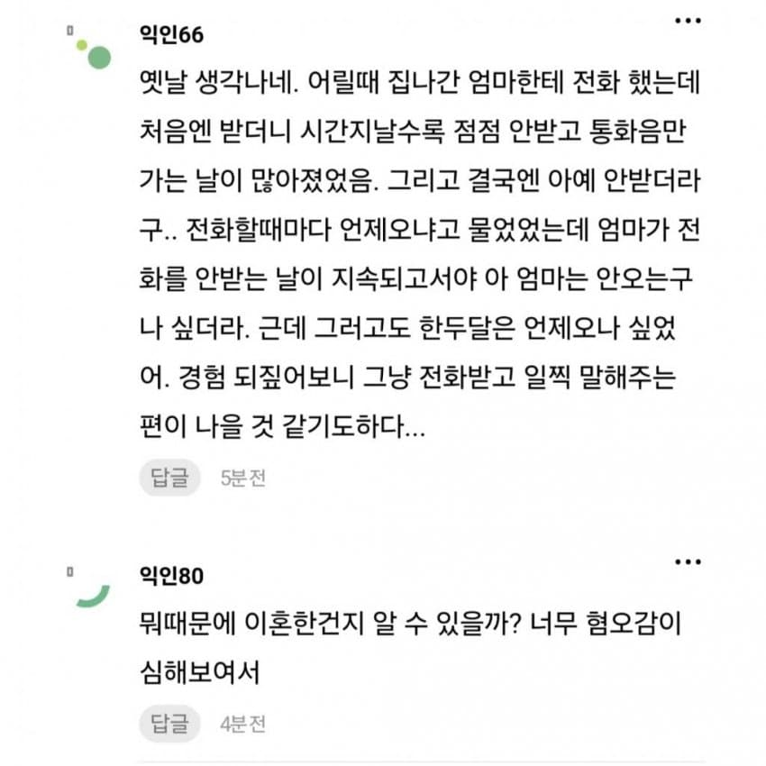
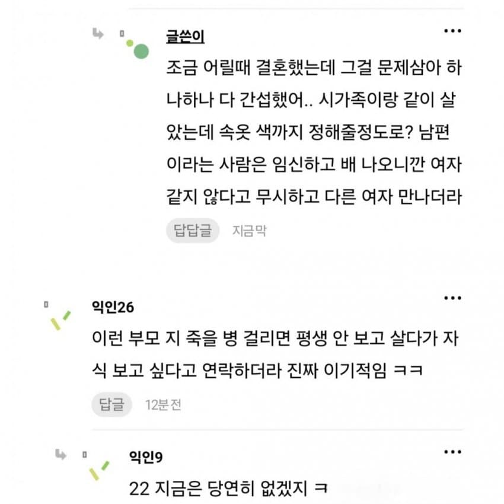
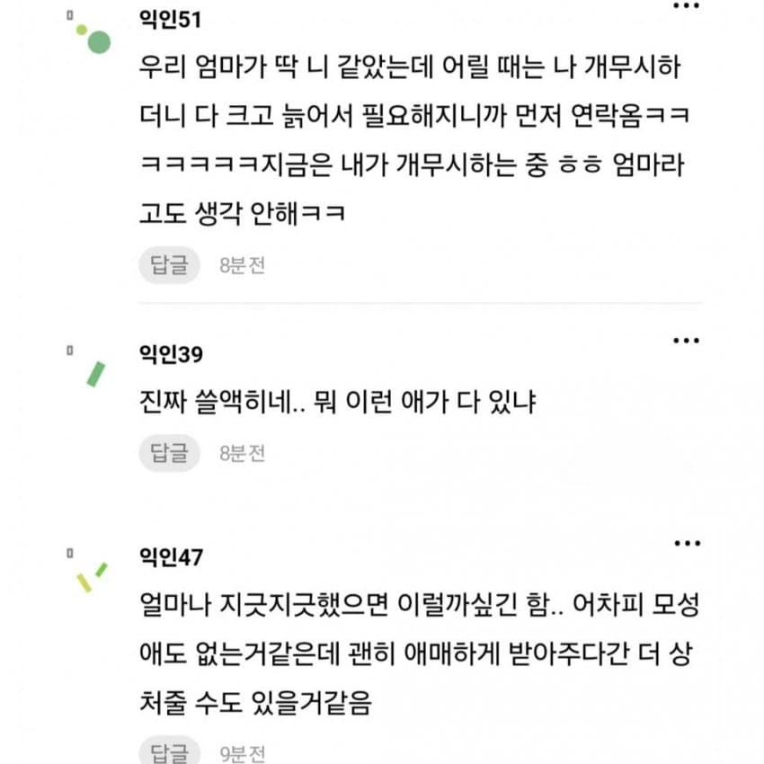

나도 이혼 가정에서 자라서 그런가 감정이입이 심하게 된다ㅠㅠ
근데 입장 바꿔서 어릴 때 결혼해서 장인, 장모에게 시달리고 와이프가 바람나서 이혼하면 애까지 보기 싫어지려나?
너무 어려운 문제다..










나도 이혼 가정에서 자라서 그런가 감정이입이 심하게 된다ㅠㅠ
근데 입장 바꿔서 어릴 때 결혼해서 장인, 장모에게 시달리고 와이프가 바람나서 이혼하면 애까지 보기 싫어지려나?
너무 어려운 문제다..
댓글
수집 당시 댓글 31개
지라르드풍자크 · 3 일 전
이미 이혼한 순간 비정상 가족인데 왜자꾸 정상인의 기준들을 들이밀어 그냥 금수들의 삶이야 받아들여
츄러스맨 · 3 일 전
내 친모도 저런런 마음이었을까 근데 차라리 안받는게 나을 것 같긴 하다. 상처는 받았지만 그래도 기대는 하지않게 됐었거든
디리링 · 3 일 전
나 어릴때 생각나서 맘이 그르네
가리가리노리아끼 · 3 일 전
애가 너무 불쌍해서 마음이 찢어지네 어린 나이에 엄마가 얼마나 보고싶었으면 저 밤에 저렇게 전화를 했을까 안 받는 엄마한테 전화하면서 무슨 심정이었을까 너무 가엽다 진짜
따뽕이 · 3 일 전
남편과 남편집이 개병신인거랑 별개로 내 기준엔 여자도 개썅년이라고 생각.
민티아 · 3 일 전
ㄹㅇ 둘이 잘맞는거 같은데 왜 이혼한지 의문 ㅋㅋㅋㅋㅋㅋㅋㅋ
화면조정 · 2 일 전
미친개들은 서로 구역을 나누기 때문
강아지아님 · 3 일 전
원래 댓글이라는게 다양성을 보여준다지만 이 게시글은 심연중 심연이네
가지전사 · 3 일 전
같은 사람 새끼들인가 싶다 진짜 씨발
SOCKOR · 2 일 전
강인하고 단단해지길
천박하지만 · 2 일 전
보통 저런년들이 나이처먹고 애 성인되면 지가 못참고 먼저 연락함 ㅋㅋ
촉심연 · 2 일 전
ㅋㅋㅋ 애 성인되고 잘되면 그때 달라붙음
JOHANSHINITS · 2 일 전
Voo평단411 · 2 일 전
당연히 안받아야지 받아서 뭐함 애 목소리만 들어도 전남편 면상 떠오를텐데
WIFI · 2 일 전
어려운 문제다. 애를 생각하면 정말 안타깝긴한데 엄마가 저모양이면 그냥 깔끔하게 없는게 나을수도있을것같기도하고.. 근데 저럴거면 본인 아쉬울때 연락하지말고 그냥 인생에 끝까지없길
오늘도어제같이 · 2 일 전
안받는건 안받는다 쳐도 애 엄마로서의 최소한의 미안한 감도 없네 그리고 커뮤에 자위용 글싸기 제정신은 아님
그냥보통사람 · 2 일 전
애는 너무너무 보고 싶어하는 감정을 해소하지 못하고 곪은 상태로 평생을 살겠구나
월구름 · 2 일 전
시가족이 속옷 색깔도 정한다. 특히 임신하고 남편이 여자 같지도 않다고 무시하며 다른 여자 만나더라 에서 소설임을 확신한다.
잔돈없어요 · 2 일 전
ㅋㅋㅋ나도 원글 볼땐 존나 애가 불쌍해서 속쓰렸는데 댓글 보고 이건 주작인게 느껴져서 편안해짐 ㅋㅋ
픽돌이 · 2 일 전
애가 너무 불쌍하다
jaspr · 2 일 전
바람핀남편이 양육권을 가져간다..?
참젖 · 2 일 전
ㅋㅋㅋㅋㅋㅋ
자본주의 · 2 일 전
충분히 가능하지 엄마가 애도 꼴보기싫은 상태라 엄마만 포기하면 바로 넘겨지지
젬미나이 · 2 일 전
안그래도 시가족이랑 연결되기 싫은데 양육스트레스나 양육비로 골머리 쓸바엔 양육권 포기했나보지
촉심연 · 2 일 전
남편에게 양육비를 주겠다...?
반숙달걀 · 2 일 전
양육권은 귀책사유랑 무관하다 하다못해 여자가 바람피고 이혼해도 여자가 양육권 가져갈수 있다 남자가 바람펴서 이혼해도 여자쪽이 양육권 포기하면 남자가 가져가는거임
실례합니다 · 2 일 전
애가 제일 불쌍하네
dksldh · 2 일 전
시가족이 빨간 란제리 추천하던가요? 제발
하루유키노 · 2 일 전
이혼사유가 시발이네.... 애는 죄가 없지만 이미 본인이 마음 정했는데 어쩌겠냐....
Hkdgja · 2 일 전
평생 안 볼거면 저러는게 맞지 반대로 저랬으면 평생 볼 자격 없는것도 맞고 엮일생각없는데 괜히 여지 주는거보다 나음.
US991231 · 2 일 전
초2 정도면 한참 엄마 보고 싶을 나이긴 해